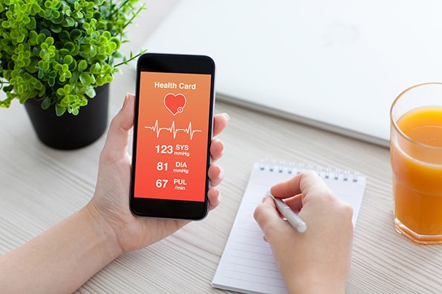

HEALTHY LIVING
07/02/18
HEALTHY LIVING
07/02/18
It can be tough to get into exercise, and once we get into a routine, it can be difficult to allow ourselves a rest day, sometimes it can feel like your body telling you enough. However, rest days are important. Not only will they help your muscles to recover (and get bigger and stronger), but will all also give you the break that can help you see there’s more to life than exercise. Don’t ignore any niggles or pains – if you’re exercising excessively, your body will let you know. Here are the signs that your body is telling you ‘enough’.
THE MUSCLE SORENESS ISN’T GOING AWAY
Muscle soreness is a sign that you’ve worked hard, but it should also be a sign to take it easy. When you start a new fitness routine, muscle soreness can be quite tough to deal with, and you should aim to give your body 24-48 hours of rest between workouts. The soreness should ease but if it doesn’t – this could be a sign that you’re working too hard and need another rest day or two to help them get back to normal.
YOU’RE FEELING MOODY OR DEPRESSED
Exercise is known for being a great mood elevator, which is why it’s important that we exercise regularly. However, exercising can also produce excess levels of cortisol, our stress hormone. When cortisol levels are high, it can lead to stress as well as affect day to day functions like memory. If you think your mood is suffering more than usual, examine your exercise routine and workout if you need to take a break. Also check out these wellness tricks to enhance your mood.
LISTEN TO YOUR HEART
If you have a fitness tracker or other form of measuring your heart rate, see what your resting heart rate is in the morning. A resting heart rate which is higher than normal could be a sign of exercising too much and that you need to slow things down. It may take you some time to figure out your resting heart rate if you don’t know it already, but give it a try and see if you notice any changes.
LISTEN TO YOUR HEART
If you have a fitness tracker or other form of measuring your heart rate, see what your resting heart rate is in the morning. A resting heart rate which is higher than normal could be a sign of exercising too much and that you need to slow things down. It may take you some time to figure out your resting heart rate if you don’t know it already, but give it a try and see if you notice any changes.
YOU’RE DEHYDRATED
If your skin is dry, your urine is dark or your lips are cracked – these could all be signs of dehydration. Whilst you may be careful to drink enough water during exercise, you may have already been dehydrated before you started. It also takes longer than you think to replace the fluids lost during exercise. Take a day to fully rehydrate and to let your body recover – and make sure you form better habits when it comes to exercise and avoiding dehydration.
YOU’RE MORE SUSCEPTIBLE TO COLDS AND VIRUSES
Whilst fit and healthy bodies tend to be able to stave off colds and other viruses, exercise can give your immune system a bit of a knock as it focuses on muscle recovery. Avoid exercise when you’re suffering with illness and make sure to keep your vitamin C intake regular to help give you the best protection. An excellent way to get a natural healthy boost of Vitamin C is to use our juice recipes to support but not replace your healthy lifestyle.
YOU’RE TIRED
Whilst exercise can help you feel energised, too much can leave you drained. If you’re struggling to get up in the morning or feel the need to fall asleep earlier than normal, as well as struggling to concentrate – these could be signs that you need to give your body a rest.
YOU REACH A PLATEAU WITH YOUR WEIGHT LOSS
If weight loss or muscle gain is your goal, you could find yourself hitting a plateau if you exercise too much. Refreshing your training is important to keep things fresh but having a rest could also offer some benefits. Take a break for a few days and you could soon start seeing results again.
Exercising is important for a healthy lifestyle, but it’s also important to find the right balance before your body telling you enough. If you’re unsure about the amount of exercise you should be doing or the intensity, a couple of sessions with a personal trainer, fitness coach or yoga teacher could help. Your own body is one of the best indicators you have as to how much is too much, so make sure you listen to the signs that your body is telling you ‘enough’ and fit those much needed rest days into your exercise routine.
LEAVE A REPLY
Your email address will not be published. Required fields are marked *